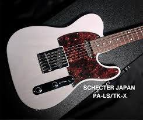

Telecaster

Nog niet zo lang geleden raakte ik geobsedeerd door een artiest en het geluid van zijn gitaar. De gitaar heeft een Telecaster-bodyvorm. Het blijft het best klinkende ding dat ik ooit gehoord heb.
Wilt u meer weten over deze gitaar? Ga dan verder via deze link: PA-LS/TK